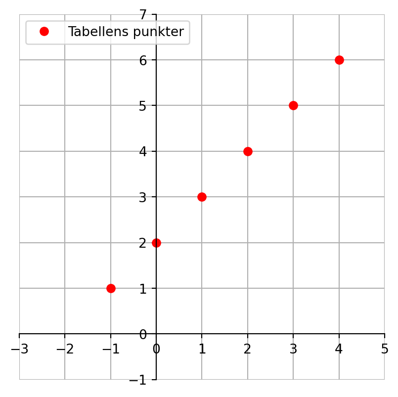
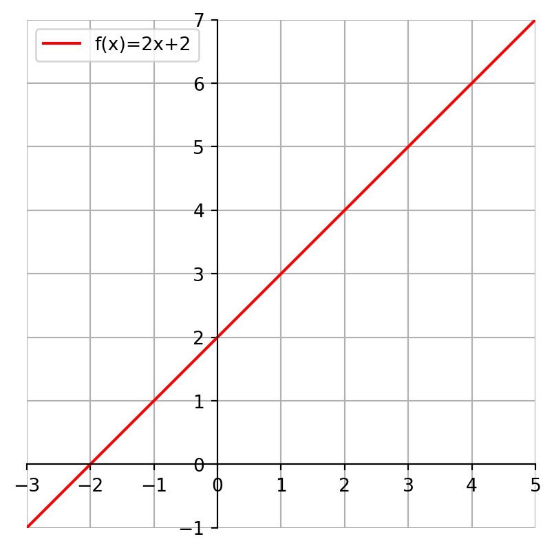
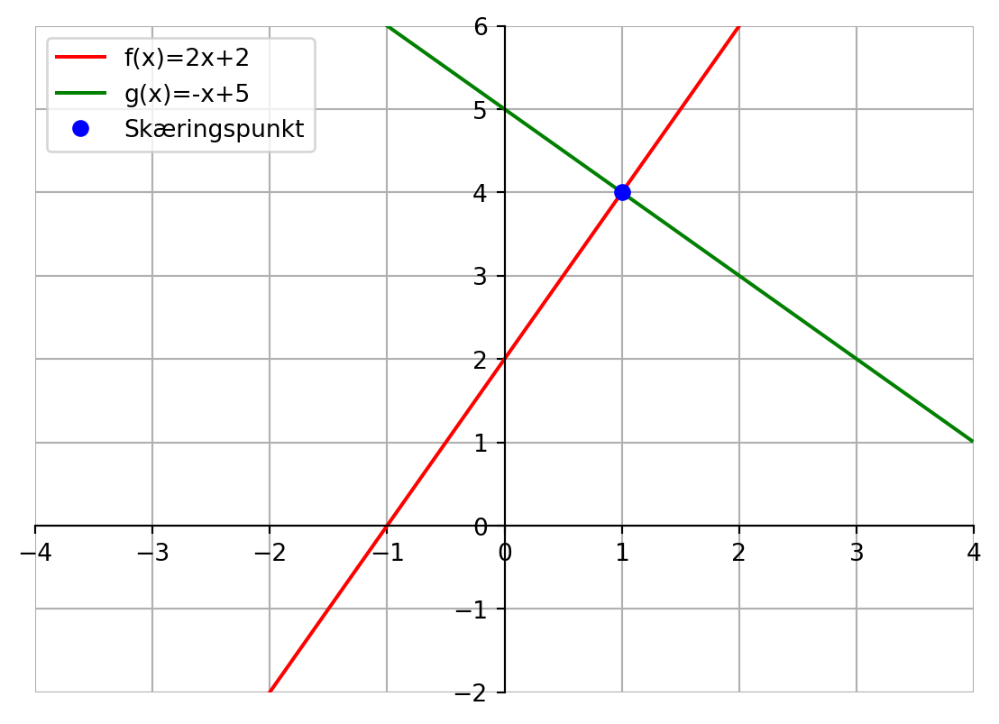

5 Lineære funktioner
\(f(x)=ax+b\) kaldes funktionsforskriften. Det kaldes dog ikke en lineær funktionsforskrift. Faktisk kalder vi det en funktionsforskrift, hvis vi skriver \(f(x)=\dots\), hvor prikkerne på højresiden kan repræsentere “alt muligt”, og en stor del af matematik på stx handler om at se eksempler- og regne på funktioner, der indeholder “alt muligt”.
Indtil videre holder vi os til de lineære funktioner.
5.1 Tabel hørende til lineær funktion
En tabel for hørende til en lineær funktion kunne se ud som nedenstående:
| x | 0 | 1 | 2 | 3 | 4 |
| f(x) | 1 | 3 | 5 | 7 | 9 |
For at udfylde nederste række, har vi udført følgende beregninger: \[ \begin{align*} f(\textcolor{red}{0})&=2 \cdot \textcolor{red}{0} +1 = 0+1=1 &\qquad f(\textcolor{red}{1})&=2 \cdot \textcolor{red}{1} +1 = 2+1=3 \\ f(\textcolor{red}{2})&=2 \cdot \textcolor{red}{2} +1 = 4+1=5 &\qquad f(\textcolor{red}{3})&=2 \cdot \textcolor{red}{3} +1 = 6+1=7 \\ f(\textcolor{red}{4})&=2 \cdot \textcolor{red}{4} +1 = 8+1=9 \end{align*} \]
5.2 Vækstegenskab
Vi ser, at hver gang, vi går en celle til højre i øverste række, vokser \(x\)-værdien med én. Det samme er ikke tilfældet med nederste række. Her vokser funktionsværdien, \(f(x)\), med to, hver gang vi går en celle til højre. (Hold musen over cellerne i nederste række.)
| x | 0 | 1 | 2 | 3 | 4 |
| f(x) | 1 |
3
1+2
|
5
3+2
|
7
5+2
|
9
7+2
|
Vi kan prøve lykken igen med funktionen \(f(x) = 3x+1\).
På samme måde som før beregner vi værdierne i nederste række ved følgende udregninger:
\[ \begin{align*} f(\textcolor{red}{0})&=3 \cdot \textcolor{red}{0} +1 = 0+1=1 &\qquad f(\textcolor{red}{1})&=3 \cdot \textcolor{red}{1} +1 = 3+1=4 \\ f(\textcolor{red}{2})&=3 \cdot \textcolor{red}{2} +1 = 6+1=7 &\qquad f(\textcolor{red}{3})&=3 \cdot \textcolor{red}{3} +1 = 9+1=10 \\ f(\textcolor{red}{4})&=3 \cdot \textcolor{red}{4} +1 = 12+1=13 \end{align*} \]
| x | 0 | 1 | 2 | 3 | 4 |
| f(x) | 1 |
4
1+3
|
7
4+3
|
10
7+3
|
13
10+3
|
Nu vokser funktionsværdien, \(f(x)\), med tre, hver gang vi går en celle til højre. (Hold musen over cellerne i nederste række.)
Hvad med negative værdier for \(a\) og \(b\)? Vi prøver nu med funktionen \(f(x) = -x-2\). Bemærk, at her er \(a=-1\).
På samme måde som før beregner vi værdierne i nederste række ved følgende udregninger:
\[ \begin{align*} f(\textcolor{red}{0})&=(-1) \cdot \textcolor{red}{0} -2 = 0-2=-2 &\qquad f(\textcolor{red}{1})&=(-1) \cdot \textcolor{red}{1} - 2 = -1-2=-3 \\ f(\textcolor{red}{2})&=-1 \cdot \textcolor{red}{2} -2 = -2-3=-4 &\qquad f(\textcolor{red}{3})&=(-1) \cdot \textcolor{red}{3} -2 = -3-2=-5 \\ f(\textcolor{red}{4})&=(-1) \cdot \textcolor{red}{4} -2 = -4-2=-6 \end{align*} \]
| x | 0 | 1 | 2 | 3 | 4 |
| f(x) | -2 |
-3
-2+(-1)
|
-4
-3+(-1)
|
-5
-4+(-1)
|
-6
-5+(-1)
|
Nu vokser funktionsværdien, \(f(x)\), med minus 1, hver gang vi går en celle til højre. (Hold musen over cellerne i nederste række.). Vi kan også sige, at \(f(x)\) aftager med 1, hver gang vi går en celle til højre.
Generelt kan vi formulere ovenstående eksempler som en generel vækstegenskab.
Bevis: \[ f(x + 1) = a \cdot (x+1)+b = ax + a + b = ax+b + a = f(x) + a \]
Man kan udvide vækstegenskaben.
Hvis vi indfører en generel tilvækst og betegner den \(\Delta x\), kan vi omskrive ovenstående sætning til
Bevis: \[ f(x + \Delta x) = a \cdot (x+ \Delta x)+b = ax + a \Delta x + b = ax+b + a \Delta x = f(x) + a \Delta x \]
5.3 Grafen for en lineær funktion
Vi betragter funktionen \(f(x)=x+2\) og en tilhørende tabel for nogle udvalgte værdier i definitionsmængden:
| x | -1 | 0 | 1 | 2 | 3 | 4 |
| f(x) | 1 | 2 | 3 | 4 | 5 | 6 |
og grafisk består denne tabel af de seks sammenhørende punkter:
Udvider vi tabellen til uendligt mange punkter får vi grafen for lineær funktion, som vi kalder en ret linje.

5.4 Aflæs \(a\) og \(b\) ud fra grafen for funktionen
5.5 Skæringspunkt

I et skæringspunkt er de to linjer samme \(x\) og \(y\)-værdi. Så vi skal løse ligningen \[ \begin{aligned} f(x) &= g(x) \Rightarrow \\ 2x+2 &= -x+5 \Leftrightarrow \\ 3x &= 3 \Leftrightarrow \\ x &= \frac{3}{3} = 1 \end{aligned} \]
\(y\)-værdien finder vi ved at beregne \(f(1)\) eller \(g(1)\). Her gør vi begge dele og tjekker, at vi rent faktisk får samme funktionsværdi. Var dette ikke tifældet, havde vi løst ligningen til at finde \(x\)-værdien forkert.
\[ \begin{aligned} f(1) &= 2 \cdot 1 + 2 = 2+2 = 4 \\ g(1) &= -1 + 5 = 4 \end{aligned} \]
Så skæringspunktet er, som grafvinduet også viser, lig \((1,4)\).